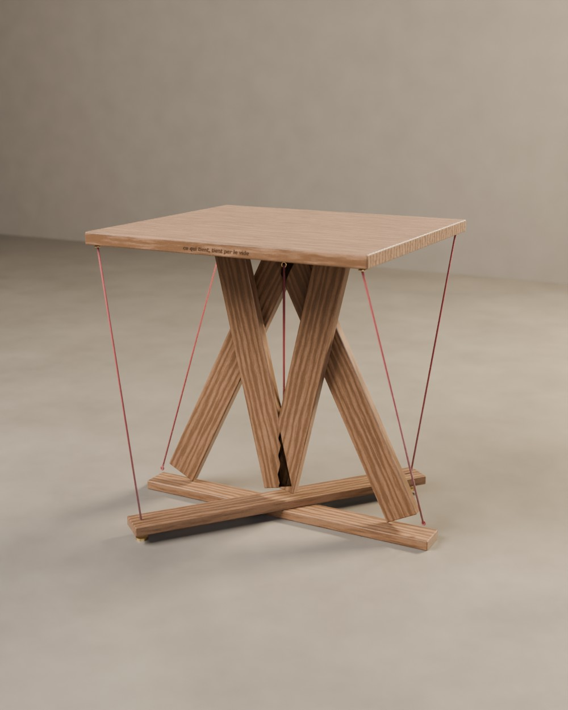
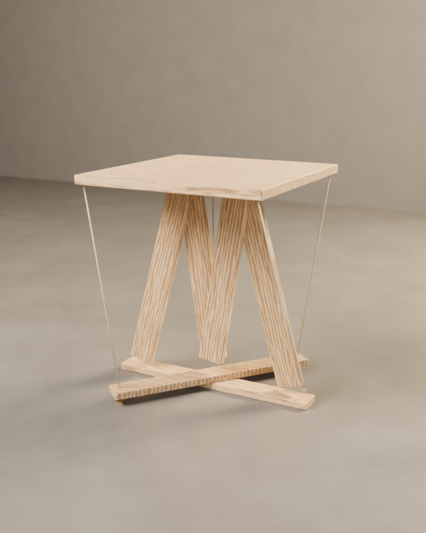
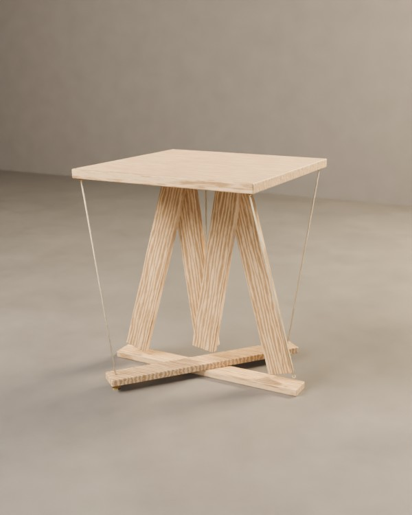

N°1 « Origine »
La première. Celle qui a donné son nom au piètement et son caractère à l'atelier : deux triangles croisés sur deux patins, cinq cordes, et un plateau qui flotte. Le pin est brossé pour creuser le veinage, puis huilé.
Deux triangles de bois qui se croisent sans se toucher, un plateau, une corde centrale qui le porte, quatre haubans qui le tiennent. À partir de là, chaque pièce prend sa propre direction : une essence, un plateau de céramique, un vers gravé, un plateau qui flotte. Toutes ont été vendues. Elles restent ici comme vocabulaire : composez la vôtre.
La première. Celle qui a donné son nom au piètement et son caractère à l'atelier : deux triangles croisés sur deux patins, cinq cordes, et un plateau qui flotte. Le pin est brossé pour creuser le veinage, puis huilé.
 Épuisé
ÉpuiséSoixante-quatre carreaux de céramique émaillée, vert bouteille et crème, enchâssés à fleur du chêne et cerclés d'un filet de laiton. Les cordes noires reprennent les cases sombres. Une table d'échecs qui reste une table.
 Épuisé
ÉpuiséFrêne brûlé à la flamme, brossé pour faire ressortir le veinage, puis huilé. Les cordes sont des câbles de laiton gainé, tendus par des œillets de laiton. La plus sombre de l'atelier.

ÉpuiséSur le chant du plateau, en italique, gravé puis ciré : ce qui tient, tient par le vide. Le noyer est sombre, les cordes bordeaux. On peut y faire graver ses propres mots.

ÉpuiséDans les deux triangles, dix-huit cordes tendues à la verticale. Elles ne portent rien, elles vibrent : on les pince en passant. La seule table de l'atelier qui fasse une note.
Un filet de laiton court au milieu du chant, et sous le plateau une lumière chaude, invisible, éclaire les triangles et les cordes. Le soir, la table devient lampe.

ÉpuiséLa structure passe en double : une paire de triangles à chaque bout, une traverse basse, et un plateau d'olivier dont le veinage fait le reste. Pour une entrée, un couloir, derrière un canapé.
Huit couverts, deux paires de triangles, quatre haubans. Le plateau en noyer massif est en trois lames jointées, huilé. Elle existe aussi avec un potager intégré au centre.
Format, essence, cordes, plateau de céramique, gravure, lévitation : le configurateur vous donne une estimation immédiate.